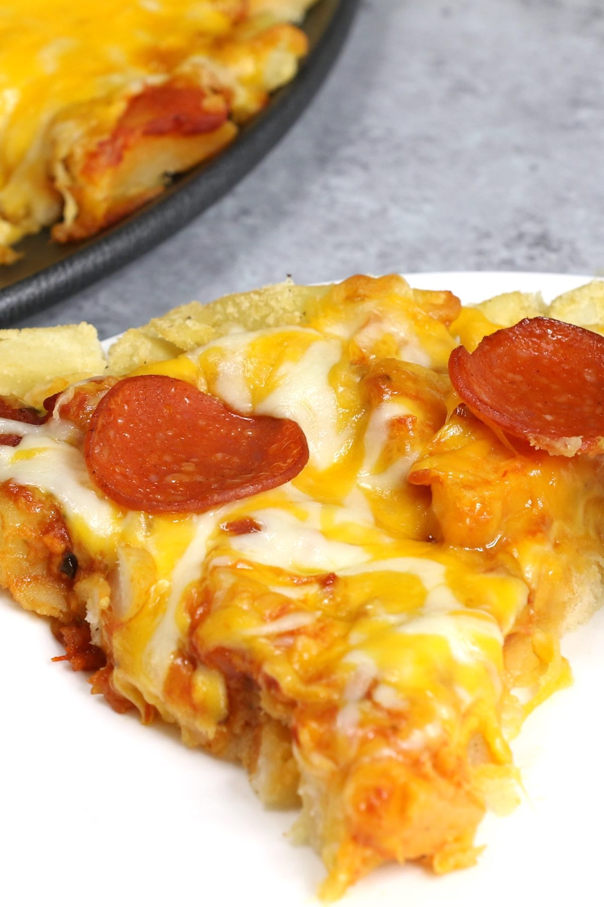

PEPPERONI PIZZA FRIES (LOADED FRENCH FRY PIZZA RECIPE)

Pepperoni Pizza Fries are loaded with crispy French fry pizza crust and cheesy pepperoni
toppings. This is a special pizza you’ve never had before! It’s so easy to make and you
can use frozen, freshly cooked, or
leftover French fries. Great for a game day party or any fun dinner parties.
Ingredients
- French Fries
- Cornstarch
- Salt and Pepper
- Marinara Sauce
- shredded cheese
- pepperoni slices
Steps
- MAKE PIZZA FRIES CRUST
- ADD TOPPINGS
- BAKE THE PIZZA AND SERVE